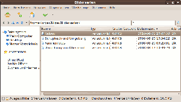

PeaZip
Dieser Artikel wurde für die folgenden Ubuntu-Versionen getestet:
Ubuntu 14.04 Trusty Tahr
Zum Verständnis dieses Artikels sind folgende Seiten hilfreich:
PeaZip  ist ein quelloffenes (LGPL), plattformübergreifendes (Windows, Linux) und portables Pack- und Archivierprogramm. Es wurde in Free Pascal unter Verwendung von Lazarus entwickelt. Es unterstützt neben dem eigenen PEA-Archivformat auch viele andere weit verbreitete Formate mit Schwerpunkt auf offenen Formaten wie 7-ZIP, PAQ, PEA oder TAR (siehe Eigenschaften). Es erlaubt Kompression, Aufteilen auf mehrere Archive und Integritätsprüfung. Es bietet flexible Schemata für zertifizierte Verschlüsselung mit Passwort und einem dazugehörigem Keyfile und ist auch für mobile Geräte erhältlich.
ist ein quelloffenes (LGPL), plattformübergreifendes (Windows, Linux) und portables Pack- und Archivierprogramm. Es wurde in Free Pascal unter Verwendung von Lazarus entwickelt. Es unterstützt neben dem eigenen PEA-Archivformat auch viele andere weit verbreitete Formate mit Schwerpunkt auf offenen Formaten wie 7-ZIP, PAQ, PEA oder TAR (siehe Eigenschaften). Es erlaubt Kompression, Aufteilen auf mehrere Archive und Integritätsprüfung. Es bietet flexible Schemata für zertifizierte Verschlüsselung mit Passwort und einem dazugehörigem Keyfile und ist auch für mobile Geräte erhältlich.
Während der Programmentwicklung wurde der Funktionsumfang mehrmals erheblich erweitert. Dadurch wurde auch die Struktur der anfangs sehr übersichtlichen graphischen Oberfläche deutlich komplizierter. PeaZip empfiehlt sich deshalb vor allem dann, wenn die Funktionalität der wesentlich einfacheren Programme File Roller oder Ark nicht ausreicht.
Eigenschaften (u.a.):
Lesen: 7Z, ACE, ARC/WRC, ARJ, BZ/TBZ, CAB, CHM/CHW/HXS, COMPOUND (MSI, DOC, XLS, PPT), CPIO, GZ/TGZ, ISO, Java (JAR, EAR, WAR), LZH/LHA, Linux (DEB, PET/PUP, RPM, SLP), NSIS, OOo, PAK/PK3/PK4, PAQ/LPAQ/ZPAQ, PEA, QUAD/BALZ, RAR, TAR, WIM/SWM, XPI, Z/TZ, ZIP...
Schreiben: 7Z, 7Z-sfx, ARC, BZ2, GZ, PAQ/LPAQ/ZPAQ, PEA, QUAD/BALZ, split, TAR, UPX, ZIP
Verschlüsselung (abhängig vom Archivformat): WinZip's AE, AES256, ZipCrypto, Blowfish, Twofish256 und Serpent256
Verwendung einer stochastisch generierten Schlüsseldatei
Sicheres Löschen
Integritätsprüfung
Benchmarks: Vergleich der Kompressionsraten und -geschwindigkeiten für die verschiedenen Formate (weitere Informationen
)Dateien teilen und zusammenfügen ("Spanning")
Erstellung zufälliger Passwörter und Schlüsseldateien
Installation¶
PeaZip ist ein komplettes, eigenständiges Programm und kein Frontend für einzelne formatspezifische Programme. Alle benötigten Hilfsprogramme werden bei der Installation von Peazip mitgeliefert. Die in Packprogramme aufgeführten Pakete werden von PeaZip nicht benötigt und werden deshalb, falls bereits installiert, auch weder beeinträchtigt noch verändert oder überschrieben.
DEB-Paket¶
Die neuesten Versionen von PeaZip stehen auf der Homepage als DEB-Pakete zur Verfügung (nur 32-Bit!) [1]. Es gibt dort Versionen für GTK2 (Ubuntu, MATE, Xubuntu, LXDE) und für Qt (Kubuntu).
Hinweis!
Fremdpakete können das System gefährden.
64-Bit¶
Das 32-bit-Paket lässt sich wegen nicht erfüllbarer Abhängigkeiten ab Ubuntu 13.04 nicht mehr installieren. Es ist jedoch problemlos möglich, statt dessen das fertig kompilierte Programm aus dem Archiv peazip-VERSION.LINUX.GTK2.tgz zu nutzen (s.u.). Eine andere Lösung wird im Blogbeitrag How to Install Latest PeaZip File Archiver 5.9.1 in Ubuntu 64-bit beschrieben.
Ohne Installation (portable)¶
PeaZip ist als eigenständiges Programm auch ohne Installation lauffähig. Hierfür stehen für GTK2 und Qt auf der Homepage Archive im Format *.tar.gz zur Verfügung [2]. Diese enthalten nicht etwa den Quelltext, sondern ebenfalls das fertig kompilierte Programm mit allen Zusatzdateien. Bei der portablen Einrichtung werden keinerlei Einträge, Einstellungen oder Veränderungen am System vorgenommen. Das Programm ist auf allen Linux-Installationen mit einer GTK2- bzw. Qt-Engine (also allen derzeit unterstützten Desktop-Versionen von Ubuntu, Kubuntu und Xubuntu sowie anderen Distributionen) lauffähig.
Es genügt nun, dieses Archiv in einen beliebigen Ordner eigener Wahl, der sich z.B. auch auf einem Wechseldatenträger (USB-Stick, externes Laufwerk) oder Netzlaufwerk befinden darf, zu entpacken[2]. In diesem findet man dann unter dem Namen peazip die ausführbare Datei, die einfach gestartet[3] werden kann. Man kann nun für diese einen Programmstarter anlegen [3] oder - im Falle eines USB-Sticks - einen Softlink einrichten. In diesem Ordner legt PeaZip vorübergehend auch temporäre Dateien an. Deshalb sollten für ihn und seine Unterordner Schreibrechte bestehen und - entsprechend dem Umfang der bearbeiteten Archive - hinreichend Platz zur Verfügung stehen.
Bei der portablen Einrichtung ist die Standardsprache zunächst Englisch. Zur Umstellung der Sprache siehe Spracheinstellungen
Aus dem Quelltext erstellen¶
Der Quelltext für PeaZip findet sich hier: peazip  . In dem Zip-Archiv ist ein Installer enthalten. Um PeaZip aus dem Quelltext zu kompilieren, ist noch folgendes Metapaket nötig:
. In dem Zip-Archiv ist ein Installer enthalten. Um PeaZip aus dem Quelltext zu kompilieren, ist noch folgendes Metapaket nötig:
lazarus
 mit apturl
mit apturl
Paketliste zum Kopieren:
sudo apt-get install lazarus
sudo aptitude install lazarus
Plugins¶
Auf der Add-On Seite des Herstellers sind noch separat zu installierende, unfreie Plugins z.B. für UNACE und 7-Zip-SFX zu finden.
Verwendung¶
Hinweis:
Die Textfelder der GUI sind für die englische Fassung ausgelegt und deshalb für die deutsche Fassung manchmal zu klein. Daher kommt es in der deutschen Version vor, dass Textzeilen beschnitten werden oder sich überlappen.
PeaZip lässt sich auch über ein Terminal oder über ein Shell-Skript (z.B. Cronjob) steuern. Die entsprechenden Befehlszeilen kann man sich in der GUI jeweils über die Option "Konsole" anzeigen lassen.
Bei Ubuntu-Varianten mit einem Anwendungsmenü wird ein Programmstarter "Systemwerkzeuge -> PeaZip" erstellt [4]. Unter KDE findet sich das Programm unter "Programme -> Dienstprogramme -> Archiving Tool".
| Entpacken |
| Archiv erstellen |
|  |
| Browser |
Das Erscheinungsbild von Peazip wurde während der Programmentwicklung mehrfach verändert. Das Hauptfenster, welches vorübergehend etwas überladen und unübersichtlich wirkte, erscheint heute in drei verschiedenen, klar strukturierten Ansichten, die sich weitgehend selbst erklären. Die seltener gebrauchten Optionen und Einstellungen erscheinen bei Bedarf in eigenen Fenstern. Beim Aufruf des Programms zeigt sich das Hauptfenster in der "Dateibrowser-Ansicht" (links). Über das Menü "Browser" gelangt man zur "Archivierungs-Ansicht" (Mitte) und zur "Entpacken-Ansicht" (rechts). Zurück zur "Dateibrowser-Ansicht" gelangt man von dort jeweils wieder über das Menü "Layout". Außerdem wird die Ansicht des Hauptfensters automatisch der jeweiligen Tätigkeit angepasst.
Archiv erstellen¶
Um ein neues Archiv zu erstellen, geht man ähnlich vor wie bei einem Brennprogramm. Folgende Schritte sind nötig:
Als Erstes wird das Layout für das Archiv erstellt. Hierfür kann man über "Datei -> Dateisystem" oder "Datei -> Lesezeichen" navigieren und Ordner oder Dateien mit Rechtsklick hinzufügen. Alternativ kann man auch über "Layout -> gehe zu Dateibrowser" das Layout editieren und Ordner oder Dateien aus anderen Fenstern über Drag and Drop einfügen.
Nach dem Fertigstellen des Layouts wählt man "Archiv erstellen". Nun folgt eine Auswahl des gewünschten Archivtyps. Daraufhin kann man noch über den Menü-Eintrag "Optionen" abhängig vom jeweiligen Format eine große Anzahl von Parametern verändern. Auch eine Aufteilung in einzelne Dateien wählbarer Größe (Option "Solider Block") ist möglich. Danach legt man noch Name und Ort (Pfad) für das Archiv fest.
Den Fortschritt der Archivierung kann man nun in einem kleinen Fenster an einem Rollbalken beobachten. Mehr Details werden in der Einstellung "Report" angezeigt. Wichtig: über das kleine Symbol links unten kann man die Priorität und damit die Geschwindigkeit der Archivierung beeinflussen.
Auch die Linux-Version von PeaZip erstellt selbstentpackende Archive als .exe-Dateien, die unter Windows oder Wine ausführbar sind. Zum Erstellen selbstentpackender Zip-Archive für Linux eignet sich das Tool unzipsfx (siehe man unzipsfx).
Archiv bearbeiten¶
Nicht alle Archivformate erlauben es, fertige Archive nachträglich zu verändern. Auch bei den Formaten, die nachträgliche Änderungen grundsätzlich gestatten, lassen sich Archive mit festen Blockgrößen (Option "solider Block") nicht mehr nachträglich verändern. Bei jeder Veränderung des Layouts oder der Inhalte kann dann nur das gesamte Archiv neu erstellt werden.
Hinzufügen und löschen¶
Hierzu öffnet man das zu bearbeitende Archiv. Anschließend kann man vorhandene Dateien markieren und löschen. Neue Dateien lassen sich durch Drag and Drop hinzufügen.
Hinweis:
Beim Verändern vorhandener Archive wird im Ordner, in dem sich PeaZip oder das verwendete Hilfsprogramm 7-Zip befindet, ein temporärer Ordner angelegt. Deshalb muss ein Schreibzugriff zu diesen Ordnern möglich sein. Ist PeaZip in /usr/local/share/PeaZip installiert und möchte man PeaZip ohne Root-Rechte verwenden, ist dieser Ordner samt Unterordnern mit dem Befehl sudo chmod -R 0777 /usr/local/share/PeaZip für Schreibzugriffe freizugeben.
Auffrischen (update)¶
Beim Auffrischen eines Archivs werden Dateien ausgetauscht, die inzwischen verändert wurden. Dabei werden die Zeitstempel verglichen und im Archiv nur Dateien ersetzt, deren Datum älter ist als das der zu übernehmenden Datei.
Hinweis:
Beim Kopieren und Übertragen von Dateien von und nach VFAT- und NTFS-Partitionen kann sich in Linux der Zeitstempel verändern!
Filter¶
Abhängig vom jeweiligen Archivformat können noch zahlreiche Ein- und Ausschlusskriterien festgelegt werden, die sich auf Wunsch auch rekursiv auf Unterverzeichnisse ausdehnen lassen.
Datensicherheit¶
Verschlüsseln¶
Einfache Verschlüsselungen mit einem Passwort sind schwach und unsicher. Deshalb bietet PeaZip die Möglichkeit, zusätzlich zu einem Passwort noch eine stochastisch generierte Schlüsseldatei zu verwenden. Seit der Version 2.1 ist dies auch bei anderen Formaten als nur bei dem eigenen PEA-Format möglich. Dabei wird dem Passwort ein Hashcode der Schlüsseldatei vorangestellt. Die Archive können dann allerdings nur noch von Programmen entpackt werden, die das gleiche Verfahren beherrschen.
Eine Schlüsseldatei wird generiert, wenn man das kleine Schlüsselsymbol rechts in der Statusleiste am unteren Rand des Hauptfensters anklickt. Zur Eingabe von Passwort und Schlüsseldatei dient das daneben stehende Schloss-Symbol.
Sicheres Löschen¶
Gewissenhaftes Verschlüsseln von Archiven setzt sicheres Löschen der Ausgangsdaten voraus. Deshalb bietet PeaZip auch die Möglichkeit, Daten durch mehrmaliges Überschreiben der Datei, des Dateinamens und der Längenangabe mit stochastisch generierten Zeichenfolgen unwiederbringlich zu löschen.
Integritätsprüfung¶
Außer dem direkten Vergleich von Dateien ist die Integritätsprüfung sowohl über Prüfsummen als auch über verschiedene Hashfunktionen (kombinierbar) möglich. Die Auswahl erfolgt über "Werkzeuge -> Einstellungen -> Dateiwerkzeuge".
Entpacken¶
Das Entpacken der Archive kann per Doppelklick oder über das Menü erfolgen. Ein Entpacken einzelner Dateien aus einem Archiv mittels Drag and Drop ist in der Linux-Version bisher nicht implementiert.
Um Archivdaten zu bearbeiten oder einfach nur anzusehen, können diese mit bis zu 16 vordefinierten Programmen geöffnet werden,
Konfiguration¶
Spracheinstellungen¶
Möchte man die Sprache von PeaZip ändern, wählt man im Menü des PeaZip-Hauptfensters den Eintrag "Tools -> Settings -> General(1) -> Localisation" und klickt auf das kleine Quadrat links neben der Eingabezeile. Es erscheint ein Fenster mit allen verfügbaren Sprachdateien. Ein Doppelklick auf die entsprechende Datei stellt die Sprache um.
| Sprache einstellen |
| Sprachdatei wählen |
| Deutschsprachige Oberfläche |
Problembehebung¶
Ubuntu 14.04¶
Die Qt-Version für 32-bit-Systeme startet mit folgender Fehlermeldung:
"peazip: undefined symbol: QApplication_hook_hook_commitDataRequest"
Abhilfe schafft die Installation folgender Pakete:
libqt4pas5 (universe)
libqt4pas-dev (universe)
mit apturl
Paketliste zum Kopieren:
sudo apt-get install libqt4pas5 libqt4pas-dev
sudo aptitude install libqt4pas5 libqt4pas-dev
 - Eine Übersicht über die wichtigsten Packprogramme für Ubuntu
- Eine Übersicht über die wichtigsten Packprogramme für Ubuntu- Erstellt mit Inyoka
-
 2004 – 2017 ubuntuusers.de • Einige Rechte vorbehalten
2004 – 2017 ubuntuusers.de • Einige Rechte vorbehalten
Lizenz • Kontakt • Datenschutz • Impressum • Serverstatus -
Serverhousing gespendet von